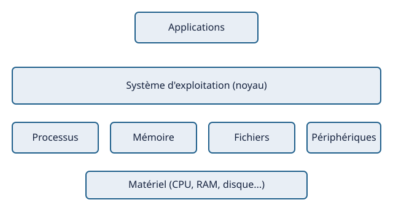

Systèmes d'exploitation
Rôle d'un système d'exploitation
- Processus : lance les programmes et partage le processeur.
- Mémoire : attribue et protège la RAM.
- Fichiers : organise le stockage.
- Périphériques : pilote clavier, écran, disques, réseau.

Windows, Linux, macOS
| Critère | Windows | Linux | macOS |
|---|---|---|---|
| Licence | Propriétaire | Libre | Propriétaire |
| Matériel | Très varié | Très varié | Apple uniquement |
| Terminal | PowerShell | Bash | Zsh |
| Usages | Bureautique, jeux | Serveurs, développement | Création, développement |
Commandes essentielles
| Action | Linux | PowerShell |
|---|---|---|
| Où suis-je ? | pwd | Get-Location |
| Lister | ls | Get-ChildItem |
| Changer de dossier | cd | Set-Location |
| Créer un dossier | mkdir | New-Item -ItemType Directory |

Les équivalents PowerShell sont dans le tableau ci-dessus. Capture PowerShell non réalisée.